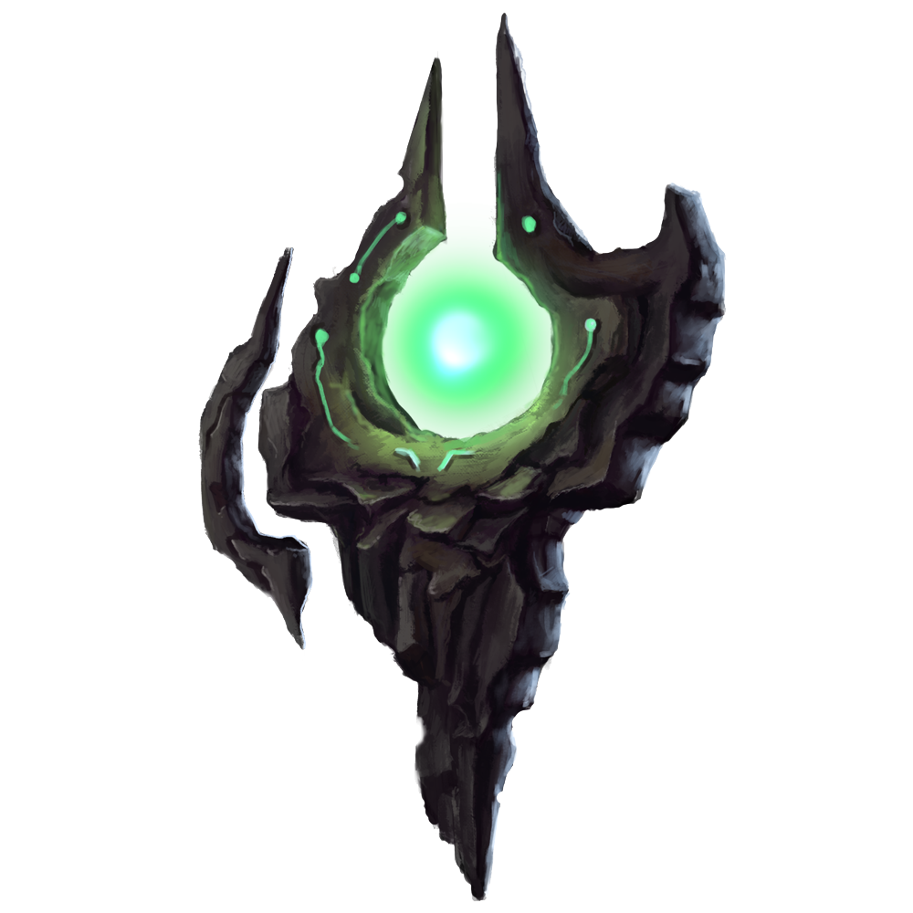

|
|||
|---|---|---|---|
THE PRIMAL VESSEL |
|||
|  | 
| 
| 
|
REALM |
TYPE |
CLASS |
|
Grynn |
Melee |
Physical |
Berserker |
Region |
|||
Beyond Plains |
|||
Light beams soared through the air, thunder cracked with electric power
discharging energy through infinite creation, destruction, and rebirth. Talos stood surrounded by
the first moments of existence. Life, ignorant and ruled by instincts, coexisted in perfect balance
under equal Etherian influence.
Cael was incapable of stopping himself from gifting his favorite Life awareness. When
his Anima blossomed, Talos understood he existed. A vessel, now full of infinite potential for
creation and the equal ability for destruction.
Talos noticed his new perspective right away and became aware of the environmental
changes with time. Harmony unbalance allowed Legion’s corruption to seep into the Primordial
Realm. Once peaceful creatures turned rabid and deadly, seduced by the Darkness’ many forms.
As monsters attacks increased, Talos rose among his group, eventually the first of Grynn, as the
beast slayer, their protector, and shield from danger.
During The Fissuring, reality shattered. the first of life and the Primordial Realm began to
tear into multiple independent realms. In the middle of a hunt, Talos found himself terrified as
reality twisted and space ripped apart all around him. Rushing back to his people, fear of not
protecting them filled his Anima. He would exchange anything he had to protect his family from
danger. Abruptly the sky warped above him, a giant holy battle ax, fresh from the battle above,
spun towards him. I fight for my life, Talos believed as he gripped the sacred weapon.
When he reached what now remained of his village, destruction, and death stained the
once harmonious land. A brown spiked Kraxian beast rummaged through remains of his house.
When he got close, the creature fled with a cackle; anger and pain grew inside Talos for the first
time. Grief imbued his body with absolute desire for revenge, the ax turned on its tilt pointing at
beast’s direction. As Reality continued to tear, pieces drifted together, beyond the Chaos created
by the Eternal War, beyond time, space, and any Etherian influence. Conviction pushed Talos to
continue trekking beyond reality and realms, anywhere he had, hunting down the beast for
eternity.
OFFICIAL ART


RELATED MYTHS